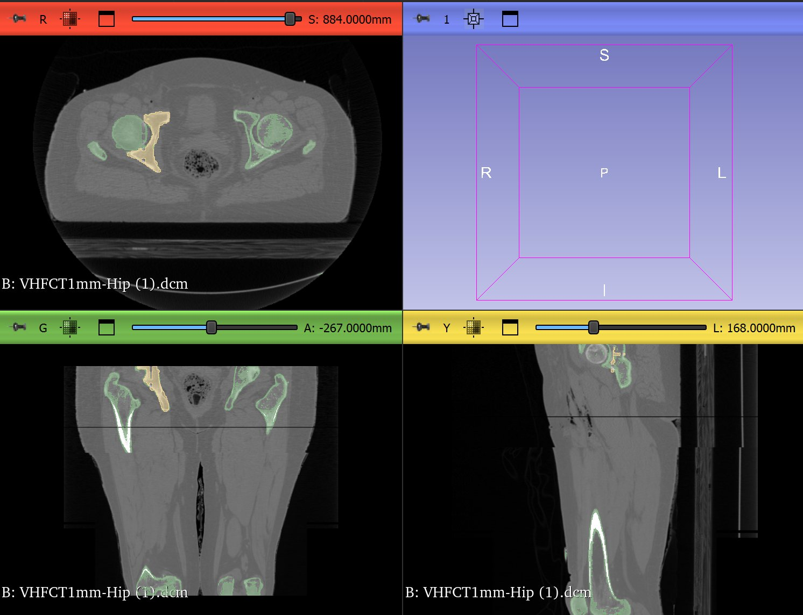
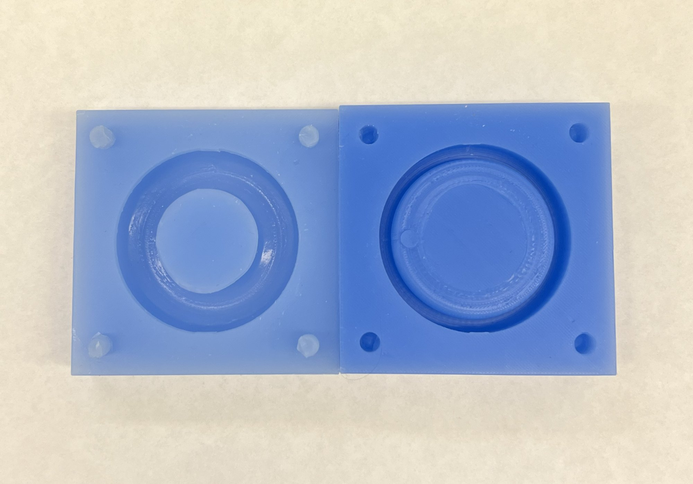
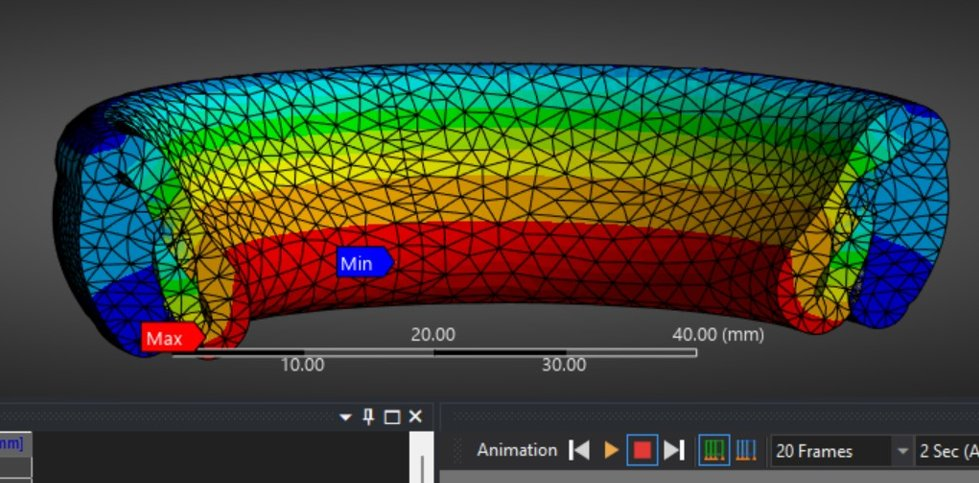

A patient-specific inflatable pessary design using CT-derived cervical measurements to accommodate inter-patient anatomical variation from imaging data to imaging to silicone mold fabrication.
Problem
Standard pessary devices use fixed sizes that don't account for the significant variation in cervical anatomy between patients. A personalized approach requires understanding that variation quantitatively, then translating it into manufacturable geometry.
Imaging workflow
Loaded pelvic CT scans as DICOM files into 3D Slicer and used the Segment Editor to isolate the relevant pelvic anatomy. The segmentation process started with the Threshold tool to isolate tissue by Hounsfield unit range, producing an initial mask of the surrounding structures. This thresholded selection was then used as a seed for the Grow from Seeds algorithm, refining the boundary and generating a clean 3D surface model of the pelvic region. From that model, key cervical dimensions were extracted to quantify inter-patient anatomical variation and directly inform the pessary mold geometry.

images/project-cervos-slicer.jpgFabrication
Fabricated wax core ellipses using custom silicone molds to produce the inflatable pessary cores. Designed reusable silicone molds to streamline production and maintain dimensional consistency across batches.

Mold / fabrication photo images/project-cervos-mold.jpgResults
Successfully demonstrated that CT-derived measurements could be used to parameterize pessary geometry for different patient profiles. FEA analysis of the pessary confirmed structural integrity under physiological loading conditions.

FEA results images/project-cervos-fea.jpg